IMAGE TAG
Image tag
Representa una imagen en el documento. Es una etiqueta autocontenida, es decir tiene etiqueta de apertura pero no tiene porque
tener una etiqueta de cierre, incluye los atributos globales y sus propios, los cuales describiremos:
ALIGN
El atributo de align que era permitido hasta HTML4 pero en webs modernas ya es obsoleto porque ahora es mas profesional hacerlo con CSS.
Este atributo era una indicacion de hacia donde se debia alinear la imagen respecto al texto del que estuviera acompañado, contaba con
5 valores: left, right, top, middle y bottom, ahora cada uno tiene su equivalente en CSS.
LEFT
Para alinear a la izquierda:
CON HTML
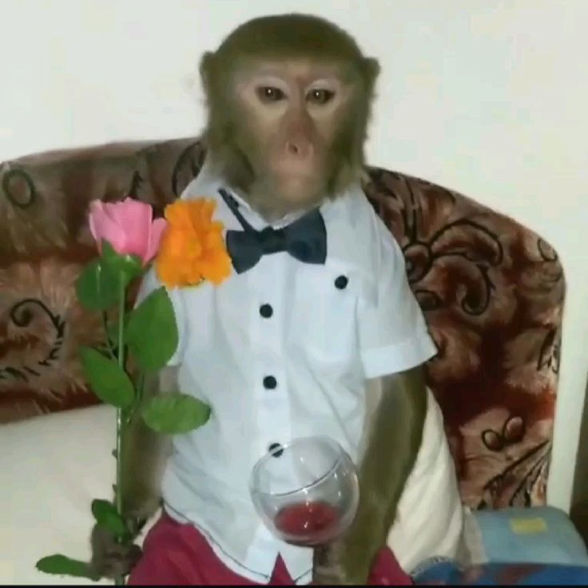
Monos:
Los simios o monos son primates de la infraorden de los haplorrinos. En castellano se suele usar la misma palabra para referirse de igual
modo a los monos y a los simios en lenguaje común, incluso para aquellos simios que carecen de cola. Su tamaño es muy variable, tienen los
ojos situados en la parte frontal de la cara y pulgares oponibles en las manos que les permiten trepar con facilidad a los árboles. Gracias a
la constitución de sus manos también son capaces de usar ciertas herramientas para llevar a cabo algunas actividades de su vida diaria.
Se conocen unas 260 especies diferentes: el babuino es el mano de mayor tamaño y el tití pigmeo el más pequeño. Son animales mamíferos, de
comportamiento sociable que en ocasiones puede convertirse en violento si se sienten intimidados.
CON CSS
Monos:
Los simios o monos son primates de la infraorden de los haplorrinos. En castellano se suele usar la misma palabra para referirse de igual
modo a los monos y a los simios en lenguaje común, incluso para aquellos simios que carecen de cola. Su tamaño es muy variable, tienen los
ojos situados en la parte frontal de la cara y pulgares oponibles en las manos que les permiten trepar con facilidad a los árboles. Gracias a
la constitución de sus manos también son capaces de usar ciertas herramientas para llevar a cabo algunas actividades de su vida diaria.
Se conocen unas 260 especies diferentes: el babuino es el mano de mayor tamaño y el tití pigmeo el más pequeño. Son animales mamíferos, de
comportamiento sociable que en ocasiones puede convertirse en violento si se sienten intimidados.
RIGHT
Para alinear a la derecha:
CON HTML:
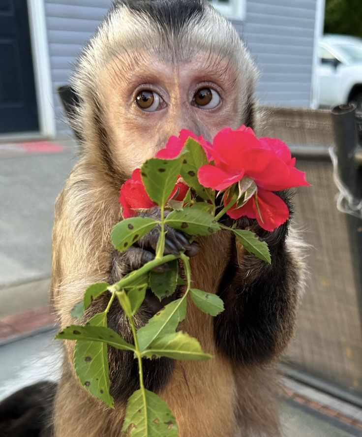
Primates:
Se han descrito unas 150 especies de primates diferentes, una orden de los mamíferos a la que pertenecemos los humanos. Tienen un cráneo de
tamaño grande y los ojos situados en la parte frontal, algo que les permite tener una buena visión capaz de calcular de forma exacta las
dimensiones de la realidad. Se cree que su origen se encuentra unos 65 millones de años atrás. La mayoría cuentan con el pulgar oponible que
les permite usar herramientas y agarrarse de forma adecuada a las ramas para poder trepar a los árboles. Son animales omnívoros y habitan en
algunas zonas de Sudamérica y Centroamérica, y las especies más grandes en África y Madagascar, siempre en las zonas tropicales y subtropicales.
CON CSS:
Primates:
Se han descrito unas 150 especies de primates diferentes, una orden de los mamíferos a la que pertenecemos los humanos. Tienen un cráneo de
tamaño grande y los ojos situados en la parte frontal, algo que les permite tener una buena visión capaz de calcular de forma exacta las
dimensiones de la realidad. Se cree que su origen se encuentra unos 65 millones de años atrás. La mayoría cuentan con el pulgar oponible que
les permite usar herramientas y agarrarse de forma adecuada a las ramas para poder trepar a los árboles. Son animales omnívoros y habitan en
algunas zonas de Sudamérica y Centroamérica, y las especies más grandes en África y Madagascar, siempre en las zonas tropicales y subtropicales.
Los otros 3 valores: Top, Middle y Bottom suelen confundir a muchos programadores, ya que son mayormente usados para iconos pequeños al tamaño del renglón donde
va el texto, manejando tamaños entre 25 px y 40 px como maximo para que no se vea raro, ya que al hacerlo con imagenes de tamaño mayor el texto o parrafo se veria
desordenado o habria grandes espacios, por esto, estos valores son comunemnte usados para iconos, como por ejemplo de descarga, para redes sociales de la pagina web
que diseñemos o aplicacion, emojis en linea, indicadores, flechas, etcera, elementos que sea INLINE, o sea vayan dentro de una linea de texto
TOP
Para alinear la imagen al top del texto
CON HTML
Serpientes
Las serpientes son un tipo de reptiles que se caracterizan principalmente por la carencia de patas. Su anatomía, caracterizada por un cuerpo alargado,
está preparada para permitir un desplazamiento sin necesidad de extremidades: pueden moverse cómodamente tanto por tierra como por agua.
Tienen la piel recubierta de escamas, un esqueleto que les proporciona mucha flexibilidad y una lengua bífida. Algunas especies matan a sus presas por constricción
por ejemplo las boas, pero otras lo hacen mediante el veneno que inoculan con los dientes cuando muerden a sus víctimas. Todos los miembros de esta especie
son animales carnívoros.
Para leer mas sobre serpientes:
 Y compartenos en tus redes sociales.
Y compartenos en tus redes sociales.
CON CSS:
Serpientes:
Las serpientes son un tipo de reptiles que se caracterizan principalmente por la carencia de patas. Su anatomía, caracterizada por un cuerpo alargado,
está preparada para permitir un desplazamiento sin necesidad de extremidades: pueden moverse cómodamente tanto por tierra como por agua.
Tienen la piel recubierta de escamas, un esqueleto que les proporciona mucha flexibilidad y una lengua bífida. Algunas especies matan a sus presas por constricción
por ejemplo las boas, pero otras lo hacen mediante el veneno que inoculan con los dientes cuando muerden a sus víctimas. Todos los miembros de esta especie
son animales carnívoros.
Si quieres leer mas articulos sobre serpientes:
Y compartenos en tus redes sociales.
MIDDLE
Para alinear la mitad de la imagen con la linea base del texto
CON HTML
Ranas:
Son un tipo de anfibios caracterizados principalmente por su gran capacidad de salto gracias a la morfología de sus extremidades posteriores, potentes y muy
desarrolladas. Los ejemplares más pequeños miden aproximadamente 8 centímetros, mientras que los más grandes pueden alcanzar los 30 centímetros.
Se han descrito unas 6.600 especies, la mayoría de las cuales reparte su vida entre el medio acuático y el terrestre. Se reproducen mediante huevos y se alimentan
de pequeños invertebrados. Su hábitat se distribuye sobretodo en los bosques de las regiones tropicales, pero se pueden encontrar algunas hasta en las regiones
subárticas. Las ranas se distinguen de los sapos básicamente por su piel, que en el caso de los sapos presenta algunas verrugas.
Sigue nuestras redes sociales:
-
Facebook

-
Instagram

CON CSS:
BOTTOM
Para alinear la parte inferior de la imagen con la linea base del texto
CON HTML
Mariposas
Los lepidópteros, mas conocidos comúnmente como mariposas, son unos insectos pertenecientes al orden de los homometábolos, un grupo de insectos superiores, los cuales,
a lo largo de su vida sufren una serie de transformaciones complejas conocida como metamorfosis, y en la que se suceden las fases de embrión, larva, pupa e imago.Las
mariposas son un tipo de insecto muy popular por los llamativos colores que tiñen sus alas y por su vuelo vacilante cuando se acerca el buen tiempo. Se han descrito unas
24.000 especies diferentes. Como todos los insectos cuentan con seis patas, dos alas y un cuerpo dividido en tres partes: cabeza, tórax y abdomen.Su boca tiene forma de
tubo pues es la herramienta con la que succionan los nutrientes de las plantas para alimentarse a través de una larga lengua enrollada sobre si misma que recibe el nombre
de espiritrompa. El único lugar en el mundo donde no se encuentran mariposas es en la Antártida.
Conoce mas historias sobre mariposas:
CON CSS
Mariposas
Los lepidópteros, mas conocidos comúnmente como mariposas, son unos insectos pertenecientes al orden de los homometábolos, un grupo de insectos superiores, los cuales,
a lo largo de su vida sufren una serie de transformaciones complejas conocida como metamorfosis, y en la que se suceden las fases de embrión, larva, pupa e imago.Las
mariposas son un tipo de insecto muy popular por los llamativos colores que tiñen sus alas y por su vuelo vacilante cuando se acerca el buen tiempo. Se han descrito unas
24.000 especies diferentes. Como todos los insectos cuentan con seis patas, dos alas y un cuerpo dividido en tres partes: cabeza, tórax y abdomen.Su boca tiene forma de
tubo pues es la herramienta con la que succionan los nutrientes de las plantas para alimentarse a través de una larga lengua enrollada sobre si misma que recibe el nombre
de espiritrompa. El único lugar en el mundo donde no se encuentran mariposas es en la Antártida.
Lee mas historias sobre mariposas:
Si tienes dudas sobre el atributo align y sus equivalentes en CSS, puedes contactarme por medio de correo:

ALTERNATIVE TEXT (Texto Alternativo)
Es el texto que acompaña a la imagen describiendo su contenido para que en caso de que la URL de la imagen sea incorrecta, la imagen no se haya descargado aun o tiene un
formato no soportado el usuario vea esa descripcion y pueda hacerse una imagen mental sin necesidad de ver la imagen, tambien sirve para accesibilidad, para hacer nuestras
paginas inclusivas en caso de personas ciegas que usen screenreader y para SEO (accesibilidad de Google) ya que alt, Google no sabe que hay ahi, es un atributo obligatorio despues
de src, pero alt se coloca vacio o podemos no colocarlo cuando la imagen es meramente decorativa y su contenido no brinda mayr utilidad al codigo.
Las descripciones deben ser muy especificas de acuerdo a la imagen, sin extendernos en descripcion cosas sencillas pero que describan a la perfeccion.
SIN COLOCAR NOMBRE DE LA IMAGEN
Leones

Los leones son los únicos felinos que viven en manada. Las unidades familiares pueden incluir hasta tres machos, una docena de hembras y sus crías. Todas las leonas de una manada
están emparentadas y usualmente los pequeñas hembras en su seno se quedan con el grupo a medida que envejecen. Los varones jóvenes, sin embargo, tarde o temprano abandonan el grupo
o son expulsados y establecen su propia manada.Una abundante y frondosa melena rodea su cara y se extiende por el cuello del rey de la selva –solo los machos la poseen: este es su rasgo
más característico y único en la familia de los félidos. Habitan en las sabanas africanas y en una zona reducida del noreste de la India, pero son una especie muy vulnerable pues antiguamente
habitaban en otras partes del mundo de las que han ido desapareciendo. Las leonas son las encargadas de salir a cazar mientras que los machos deben defender el territorio de la manada y a sus hembras.
Suelen comer grandes mamíferos como ñus, cebras, búfalos o facóceros entre otros, y pueden llegar a vivir aproximadamente unos 15 años. Estos animales han sido venerados a lo largo de la historia por su
valor y su fuerza. Una vez pudieron encontrarse en la mayor parte de África y algunas partes de Asia y Europa. Hoy en día sólo se encuentran en ciertos lugares al sur del desierto del Sáhara, a excepción de
una población muy pequeña de leones asiáticos que sobrevive en el bosque Gir de la India.
COLOCANDO NOMBRE DE LA IMAGEN
Leones
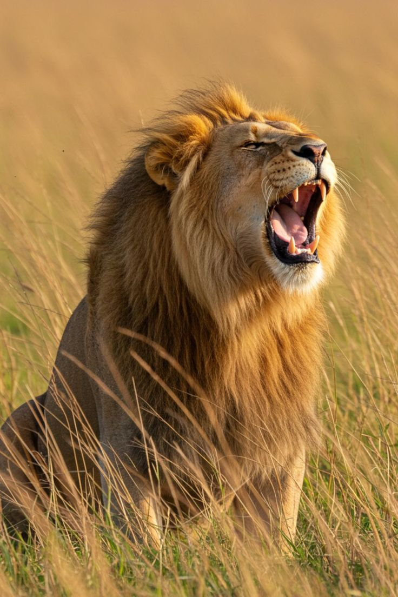
Los leones son los únicos felinos que viven en manada. Las unidades familiares pueden incluir hasta tres machos, una docena de hembras y sus crías. Todas las leonas de una manada
están emparentadas y usualmente los pequeñas hembras en su seno se quedan con el grupo a medida que envejecen. Los varones jóvenes, sin embargo, tarde o temprano abandonan el grupo
o son expulsados y establecen su propia manada.Una abundante y frondosa melena rodea su cara y se extiende por el cuello del rey de la selva –solo los machos la poseen: este es su rasgo
más característico y único en la familia de los félidos. Habitan en las sabanas africanas y en una zona reducida del noreste de la India, pero son una especie muy vulnerable pues antiguamente
habitaban en otras partes del mundo de las que han ido desapareciendo. Las leonas son las encargadas de salir a cazar mientras que los machos deben defender el territorio de la manada y a sus hembras.
Suelen comer grandes mamíferos como ñus, cebras, búfalos o facóceros entre otros, y pueden llegar a vivir aproximadamente unos 15 años. Estos animales han sido venerados a lo largo de la historia por su
valor y su fuerza. Una vez pudieron encontrarse en la mayor parte de África y algunas partes de Asia y Europa. Hoy en día sólo se encuentran en ciertos lugares al sur del desierto del Sáhara, a excepción de
una población muy pequeña de leones asiáticos que sobrevive en el bosque Gir de la India.
BORDER
Al igual que align es un atributo obsoleto en HTML moderno. Su funcion era colocar bordes a las imagenes, pero en HTML antiguo solo permitia bordes en color negro y sin alguna forma en particular.
En HTML moderno, se puede realizar de dos maneras: Estilo directo (CSS inline), dentro del mismo HTML dando sus valores y como segunda forma en una clase externa en CSS que es lo mas profesional, donde si se
permite cualquier color, estilo y otros detalles como sombras y esquinas redondas, no da errores y es super profesional. Esta formado por 3 partes: grosor, estilo y color. Colocados en ese orden ya sea inline o
externamente.
CON HTML
Guepardos
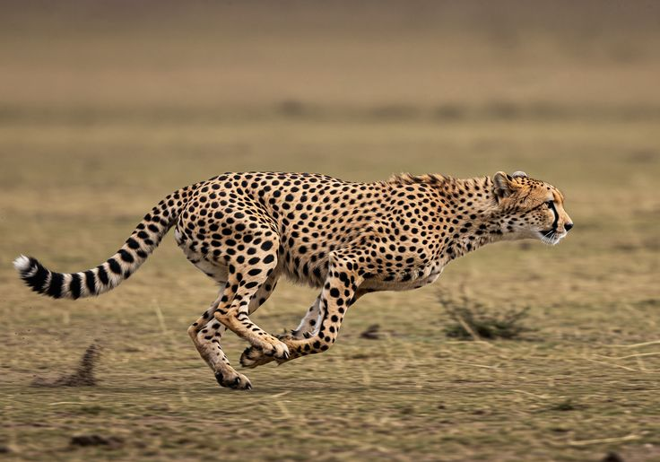
También conocido como chita del inglés cheetah, el guepardo es un felino considerado el animal terrestre más rápido del mundo, llegando a desplazarse a más de 100km/h en carreras largas, una velocidad
que puede alcanzar en tan solo 3 segundos. Es uno de los cazadores más eficientes gracias a un excelente sentido de la vista y su gran agilidad mediante la cual pueden hacer rápidos y repentinos giros
en la persecución de su presa. Se alimenta de ñus, cebras, antílopes y sus favoritas, las gacelas.Este felino es un gran depredador diurno que se vale del movimiento furtivo y sigiloso que le caracteriza
y de una distintivo patrón de manchas en su piel que le permite camuflarse fácilmente entre las hierbas altas y secas donde aguarda agazapado el momento en el que lanzarse sobre su víctima. Se pueden
distinguir fácilmente de los leopardos por las líneas negras que salen de sus ojos –como lágrimas– y descienden hacia a bajo enmarcando el hocico.
Las hembras suelen dar a luz a camadas de tres cachorros y generalmente viven con ellos durante periodos que transcurren entre el año medio y los dos años. Los cachorros jóvenes pasan su primer año
aprendiendo de su madre y practicando técnicas de caza a través de juegos- Los machos suelen ser solitarios o vivir en grupos pequeños, a menudo con sus compañeros de camada.
La mayor parte de los guepardos que quedan en la actualidad viven en el este y sudoeste de África, donde habitan los 12.000 ejemplares que se calcula que quedan. Viven aproximadamente 12 años, algunos
pueden llegar a pesar 60 kilos y miden entre 1,10 y 1,40 metros, mientras que la cola tiene una longitud de casi 80 centímetros y constituye una herramienta clave para su equilibrio y agilidad.
CON CSS
Con CSS tenemos total libertad en cuanto a colores del borde, estilo, sombras, cosa que en HTML antiguo no se podia, conocermos unos cuantos valores de estilos y bordes.
SOLID:
El estilo "solid" de border indica que a la imagen la rodeara un borde solido sin mayor efecto del color especificado.
DASHED
Un borde formado por guiones del tamaño y color especificado por el programador.
DOTTED
Para un borde punteado.
DOUBLE
Un borde de doble linea.
GROOVE/RIDGE
Estos valores dan un efecto 3D dependiendo del color
Con GROOVE:
CON RIDGE
INSET/OUTSET
Inset para dar un efecto de border "salidos" y outset da un efecto de bordes "hundidos"
INSET
OUTSET
BORDES REDONDEADOS
Para que las imagenes se vean profesionales, con border-radius: _;
Para un circulo perfecto, el mismo atributo: style="border-radius: _;" pero en lugar de px usamos % para el tamaño del radio
SOMBRAS (box-shadow)
Para darle un efecto de sombra a nuestra imagen tenemos que darle diferente cantidad de valores, normalmente son 4 valores, pero usando la cantidad de valores que usemos, los primeros dos valores son
OBLIGATORIOS, y los demas son opcionales pero profesionalmente se usan 4: style="box-shadow: offset-x offset-y blur color(_,_,_,_)"
Donde:
- offset-x: significa desplazamiento horizontal, indica si la sombra se mueve a la izquierda (-) o a la derecha (+) del elemento
- offset-y: desplazamiento vertical, que indica si la sombra alrededor del elemento se mueve hacia arriba (-) o hacia abajo (+)
- blur:para la difuminacion de la sombra, este mas alto sea el valor, mas desvanecido se ve el color de la sombra, si se pone un valor de 0px, la sombra se ve solida.
- color de la sombra: aca se pueden usar RGB, RGBA Y HEX:
- RGB:rgb trabaja con 3 valores que significan: r = red; g = green y b = blue donde cada uno de estos 3 valores van desde 0 a 255.
Donde 0 indica la ausencia de ese color y 255 la maxima intensidad de ese color. En otras palabras es como combinar pinturas pero con luz.
- RGBA:Usa 4 valores, los mismos 3 de rgb (red, green y blue) y un cuarto valor a = alpha que controla la transparencia de la sombra, haciendo que la sombra
se vuelva mas realista que con rgb, y alpha tiene valores de 0 a 1, donde 0 indica que es totalmente visible y 1 totalmente transparente, como si no hubiera sombra, aqui se juega con
decimales, por ejemplo si colocamos un valor de alpha de 0.25 indica que la sombra tiene un 25% de opacidad.
- HEX:este es un color escrito en codigo, que representa el mismo color que si se usara rgb pero en base 16 (hexadecimal). Un valor hex siempre inicia con # y tiene 6 valores.
Donde los primeros dos 00 son para red, 00 para green y 00 para blue. Y como los codigos hexadecimales trabajan con los numeros del 0 al 9 y las letras de a a f, la f equivale a 255 en rgb.
Entonces el color a usar depende de lo que estemos haciendo, para unos hex es mas corto y se usa mas en diseño y rgb/rgba para cuando se quiere manipular valores con calculo o solo cuando se necesite trasnparencia
USANDO RGB:
USANDO RGBA:
USANDO HEX:
Otros valores importantes de BOX-SHADOW:
- Spread:El cual hace que la sombra se vea mas grande o mas "alta", como si la sombra se expandiera.
- Inset:Hace que la sombra pase de ser externa a interna (como si estuviera dentro de la imagen). Se coloca normalmente
antes de los demas valores:
SIN APLICAR PADDING NI DISPLAY:
Aca si tenemos un box-shadow escrito correctamente y ahi esta, no se logra apreciar debido a que el contenido ocupa todo el espacio del contenedor y la sombra interna queda escondida
detras del contenido y pasa desapercibida.
APLICANDO UN PADDING Y DISPLAY:
Por defecto, la etiqueta img es un elemento inline que no acepta width, height, padding u otros atributos, entonces aplicando un display en este caso BLOCK, el elemento deja de ser inline y se comporta como un bloque completo
que ocupa toda la linea y si hubiera algo a su lado obligaria a que se vaya hacia abajo y ya nos permite agregar un padding con ancho y alto para que el box-shadow se note.
Inline-block:
The UK government wants new small nuclear reactors on Anglesey. Workers start the job next year. The plan is to make power for three million homes in the 2030s.
Leer el articulo completo
The reactors are small, fast to build, and not as expensive as big nuclear stations. People on the island hope for new jobs. Now, many young people leave the island for work. Officials say that the reactors can help families stay.
The plan also brings money and new chances for the community.
Block:
The UK government wants new small nuclear reactors on Anglesey. Workers start the job next year. The plan is to make power for three million homes in the 2030s.
Leer artículo completo
The reactors are small, fast to build, and not as expensive as big nuclear stations. People on the island hope for new jobs. Now, many young people leave the island for work. Officials say that the reactors can help families stay.
The plan also brings money and new chances for the community.
Perros:
Ya desde la prehistoria se han documentado casos de asociación entre estos mamíferos descendientes del lobo y el ser humano. Cuando el hombre se dio cuenta de que podía ser un compañero de caza muy eficaz se creó una relación que
ha evolucionado hasta la actualidad. Se cree que esta domesticación se produjo en Europa hace entre 20.000 y 40.000 años, a finales del Neolítico, dando lugar a la especie que hoy conocemos como Canis Lupus familiaris.
Pese a que todos los perros actuales tienen un antepasado común, hoy en día se conocen alrededor de 800 razas distintas con tamaños y fisonomías muy diferentes y originadas a partir de la selección artificial por parte de los seres
humanos. A pesar de que no cuentan con un gran sentido de la vista, tienen muy buen oído y el sentido del olfato muy desarrollado, siendo esta la herramienta que define sus mejores cualidades como cazador o rastreador, pero también
su capacidad de socialización reconociendo olores familiares. Las hembras pasan el celo dos veces al año, su periodo de gestación dura un poco más de dos meses y suelen tener camadas de entre 8 y 12 crías. A pesar de que su esperanza
de vida está entre los 12 y los 15 años, hay algunos que pueden alcanzar los 20 años.
Conozca mas sobre perros:
CROSSORIGIN
Este atributo que no solo se usa en img, tiene la funcion de indicar si la busqueda del elemento en este caso la imagen debe hacerse por CORS (Cross-Origin Resourse Sharing) o no.
En otras palabras, le dice al navegador si puede utilizar ese recurso externo sin generar problemas de seguridad o restricciones cuando el usuario interactue con él,
especialmente cuando se usa la etiqueta de canvas (que se vera mas adelante) para editarlo, dibujar sobre él o descargarlo. Tiene dos valores principales:
-
"anonymus":Indica que el recurso puede cargarse sin enviar credenciales del usuario (como cookies, tokens o sesiones). Esto es lo mas seguro y lo mas usado.
Permite que la imagen siga siendo válida para manipularla en un elemento canvas sin contaminarlo.
Si la imagen externa permite CORS ya que es necesario aclarar que no todos los sitios lo permiten, pero si lo hace el navegador la cargara correctamente y el canvas funcionara sin
restricciones.
-
"use-credentials":Esta propiedad envia credenciales del usuario al servidor externo. Esto casi nunca se usa para las imagenes porque implicaria compartir cookies o sesiones
con otro dominio, lo cual puede ser inseguro.
Solo se usa cuando el servidor externo lo necesita especificamente lo cual es raro en recursos publicos..
Si no se pone crossorigin y mas que todo con "anonymus" como propiedad nos exponemos o como programadores, exponemos al usuario a dos situaciones:
- Situacion 1: Aca la imagen se muestra normalmente, pero no se puede usar en canvas ya que el canvas queda contaminado (tainted) y expone a situaciones de seguridad si se usa aun asi.
- SItuacion 2: En este caso el navegador puede bloquear el recurso si el servidor tiene restricciones. Entonces el archivo no se muestra.
Y como aclaramos, cross-origin no brinda los permisos, quien los brinda es el servidor externo de donde proviene el recurso que estamos manipulando, entonces en casos que esos servidores no lo admitan
aunque tengamos cross-origin no vamos a poder manipular el elemento en un canvas.
HEIGHT
Es la altura de la imagen en pixeles con la que se mostrara en la pagina web, este atributo le indica al navegador con que altura exacta debe mostrarla. En HTML5 es un valor que unicamente se expresa con
numeros, el navegador interpreta que son pixeles, no se puede poner height=50%, es incorrecto.
En HTML4 height si aceptaba otro valor que era porcentaje, donde este valor era decirle al navegador el tamaño que usaria respecto al contenedor donde esta se encontrara, por ejemplo si se colocaba un valor de
height de 25%, el navegador mostraria la imagen con un tamaño de la cuarta parte del valor total de la altura del contenedor.
Hoy en dia, lo profesional es hacerlo mediante CSS, directamente en HTML con un style o mediante una clase desde CSS.
Si solo se coloca height sin modificar width (ancho), el navegador lo mantiene proporcional, pero si manipulamos ambos de una forma
desproporcional, la imagen podria quedar deformada, alargada o aplastada.
EJEMPLO:
-
La imagen tiene una altura (height) de 100px y un ancho (width) de 225px, lo que es desproporcional y hace que se vea aplastada y no se aprecie la imagen.
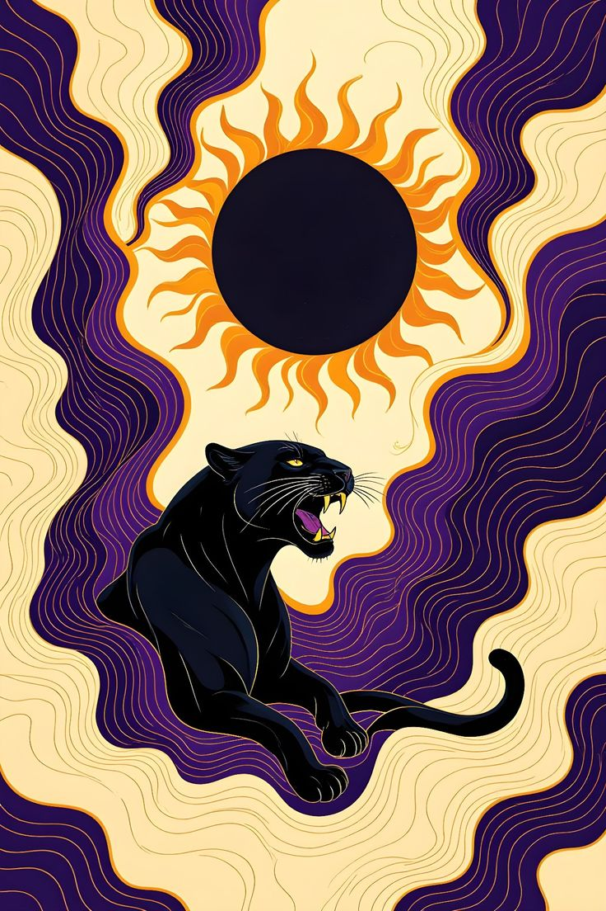
-
Aca solo hemos manipulado la altura dejandola con 200px, el navegador mantiene la imagen proporcional y se aprecia muy bien.
-
Si no se especifica el atributo height, la imagen se muestra con su propia altura:
-
Si se manipula solo el ancho, la altura se adapta de una forma proporcional automaticamente para no deformarse:
-
Para usar porcentaje, mediante un contenedor para indicar el tamaño al que se debe ajustar a traves de CSS inline.
El contenedor tiene 200px de alto y 200px de ancho y le indicamos a la imagen que use el 50% de alto y ancho de ese contenedor donde se encuentra, donde la imagen ocupara 100px de alto y 100px de ancho:
HSPACE
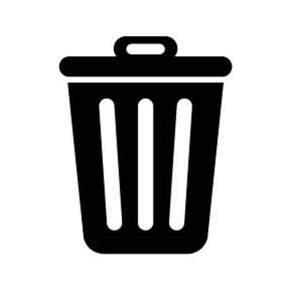
Este atributo indicaba en pixeles el numero de espaciado de la imagen a la derecha e izquierda. Se usaba en HTML3 y principios de HTML4 pero quedo obsoleto porque mezclar contenido mas presentacion en una etiqueta lo hacia limitado.
Ahora su equivalente en webs modernas es MARGIN, mediante un CSS inline con style o por medio de una clase externa. Donde solo declarar margin con una cantidad le indica al navegador que sera la misma cantidad de espacio a la izquierda
y derecha y tambien tiene propiedades para izquierda y derecha:
- Margin-left: para el espaciado unicamente a la izquierda.
- Margin-right: para el espaciado a la derecha.
Si vamos a dejar el mismo espacio a la izquierda y derecha es mas practico hacerlo mediante un margin general, pero si solo se quiere dejar espacio a un lado usamos right o left y ambos si a cada lado sera diferente cantidad de espaciado.
MARGIN
Para un espaciado de la misma cantidad de pixeles a ambos lados:
Quedando con 20px a la izquierda del contenedor y 20px a la derecha del texto.
Mercurio:
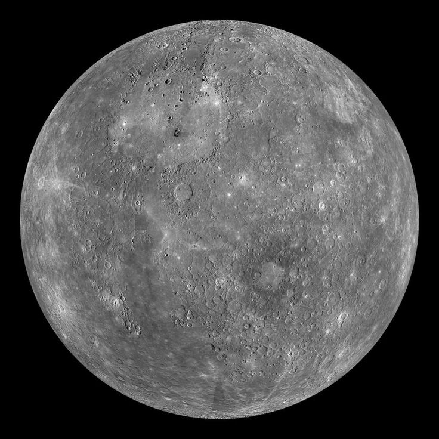
Mercurio es un planeta extraño y por su cercanía con el Sol, uno de los menos estudiados del sistema solar. Sin embargo, se trata de uno de los mundos cercanos que más fascinan a los astrónomos.
Con un tamaño tan solo un poco mayor al de nuestra luna, Mercurio es el más pequeño de los planetas del sistema solar y el más cercano al Sol. A pesar de su pequeño tamaño este planeta ya era conocido al menos desde la época de los Sumerios,
hace 5.000 años. Posteriormente los griegos lo bautizaron como Hermes, en honor al mensajero de los dioses del olimpo, el cual más tarde fue conocido por los romanos como Mercurio, nombre con el que ha llegado hasta nuestros días.
El nombre de este planeta no es casualidad pues, al igual que Mercurio era el más veloz de los dioses del Olimpo, con una velocidad de 170.5030 kilómetros por hora, el planeta Mercurio es el que viaja más rápido a través del espacio en nuestro sistema
solar. Además, la órbita de Mercurio es la más excéntrica entre todos los planetas que orbitan el Sol, al que tarda 88 días en dar una vuelta completa.
Por su proximidad a nuestra estrella, desde la superficie de Mercurio nuestro Sol se vería 3 veces más grande que desde la Tierra, y su brillo sería hasta 7 veces superior. Del mismo modo, cabría esperar que, por su cercanía al Sol, Mercurio fuera el planeta
más caliente del sistema solar, sin embargo, contradiciendo la intuición, este honor es para el Venus, pues es en Venus que, debido a su densa atmósfera, se registran las temperaturas más altas de todo el sistema solar. También cabe decir que eje de rotación de
Mercurio está inclinado apenas 2 grados con respecto al plano de su órbita alrededor del Sol. Eso significa que gira casi perfectamente en posición vertical y, por lo tanto, no experimenta estaciones.
MARGIN-LEFT
Para un espaciado a la izquierda.
Con 20px de espaciado a la izquierda del contenedor y a la derecha el texto queda junto a la imagen ya que no tiene espaciado a ese lado.
Mercurio es un planeta extraño y por su cercanía con el Sol, uno de los menos estudiados del sistema solar. Sin embargo, se trata de uno de los mundos cercanos que más fascinan a los astrónomos.
Con un tamaño tan solo un poco mayor al de nuestra luna, Mercurio es el más pequeño de los planetas del sistema solar y el más cercano al Sol. A pesar de su pequeño tamaño este planeta ya era conocido al menos desde la época de los Sumerios,
hace 5.000 años. Posteriormente los griegos lo bautizaron como Hermes, en honor al mensajero de los dioses del olimpo, el cual más tarde fue conocido por los romanos como Mercurio, nombre con el que ha llegado hasta nuestros días.
El nombre de este planeta no es casualidad pues, al igual que Mercurio era el más veloz de los dioses del Olimpo, con una velocidad de 170.5030 kilómetros por hora, el planeta Mercurio es el que viaja más rápido a través del espacio en nuestro sistema
solar. Además, la órbita de Mercurio es la más excéntrica entre todos los planetas que orbitan el Sol, al que tarda 88 días en dar una vuelta completa.
Por su proximidad a nuestra estrella, desde la superficie de Mercurio nuestro Sol se vería 3 veces más grande que desde la Tierra, y su brillo sería hasta 7 veces superior. Del mismo modo, cabría esperar que, por su cercanía al Sol, Mercurio fuera el planeta
más caliente del sistema solar, sin embargo, contradiciendo la intuición, este honor es para el Venus, pues es en Venus que, debido a su densa atmósfera, se registran las temperaturas más altas de todo el sistema solar. También cabe decir que eje de rotación de
Mercurio está inclinado apenas 2 grados con respecto al plano de su órbita alrededor del Sol. Eso significa que gira casi perfectamente en posición vertical y, por lo tanto, no experimenta estaciones.
MARGIN-RIGHT
Para dar un espaciado a la derecha de la imagen, haciendo que lo que esta del lado izquierdo quede junto a el, si tiene texto a la izquierda o si esta del lado del contenedor quedara junto a él.
20px de espacio a la derecha del texto.
Mercurio es un planeta extraño y por su cercanía con el Sol, uno de los menos estudiados del sistema solar. Sin embargo, se trata de uno de los mundos cercanos que más fascinan a los astrónomos.
Con un tamaño tan solo un poco mayor al de nuestra luna, Mercurio es el más pequeño de los planetas del sistema solar y el más cercano al Sol. A pesar de su pequeño tamaño este planeta ya era conocido al menos desde la época de los Sumerios,
hace 5.000 años. Posteriormente los griegos lo bautizaron como Hermes, en honor al mensajero de los dioses del olimpo, el cual más tarde fue conocido por los romanos como Mercurio, nombre con el que ha llegado hasta nuestros días.
El nombre de este planeta no es casualidad pues, al igual que Mercurio era el más veloz de los dioses del Olimpo, con una velocidad de 170.5030 kilómetros por hora, el planeta Mercurio es el que viaja más rápido a través del espacio en nuestro sistema
solar. Además, la órbita de Mercurio es la más excéntrica entre todos los planetas que orbitan el Sol, al que tarda 88 días en dar una vuelta completa.
Por su proximidad a nuestra estrella, desde la superficie de Mercurio nuestro Sol se vería 3 veces más grande que desde la Tierra, y su brillo sería hasta 7 veces superior. Del mismo modo, cabría esperar que, por su cercanía al Sol, Mercurio fuera el planeta
más caliente del sistema solar, sin embargo, contradiciendo la intuición, este honor es para el Venus, pues es en Venus que, debido a su densa atmósfera, se registran las temperaturas más altas de todo el sistema solar. También cabe decir que eje de rotación de
Mercurio está inclinado apenas 2 grados con respecto al plano de su órbita alrededor del Sol. Eso significa que gira casi perfectamente en posición vertical y, por lo tanto, no experimenta estaciones.
MARGIN-LEFT Y MARGIN-RIGHT
Si queremos dar una cantidad distinta de espaciado a cada lado usamos margin-left y margin-right en el mismo style.
Con 10px de espaciado a la izquierda del contenedor y 25px a la derecha del texto.
Mercurio es un planeta extraño y por su cercanía con el Sol, uno de los menos estudiados del sistema solar. Sin embargo, se trata de uno de los mundos cercanos que más fascinan a los astrónomos.
Con un tamaño tan solo un poco mayor al de nuestra luna, Mercurio es el más pequeño de los planetas del sistema solar y el más cercano al Sol. A pesar de su pequeño tamaño este planeta ya era conocido al menos desde la época de los Sumerios,
hace 5.000 años. Posteriormente los griegos lo bautizaron como Hermes, en honor al mensajero de los dioses del olimpo, el cual más tarde fue conocido por los romanos como Mercurio, nombre con el que ha llegado hasta nuestros días.
El nombre de este planeta no es casualidad pues, al igual que Mercurio era el más veloz de los dioses del Olimpo, con una velocidad de 170.5030 kilómetros por hora, el planeta Mercurio es el que viaja más rápido a través del espacio en nuestro sistema
solar. Además, la órbita de Mercurio es la más excéntrica entre todos los planetas que orbitan el Sol, al que tarda 88 días en dar una vuelta completa.
Por su proximidad a nuestra estrella, desde la superficie de Mercurio nuestro Sol se vería 3 veces más grande que desde la Tierra, y su brillo sería hasta 7 veces superior. Del mismo modo, cabría esperar que, por su cercanía al Sol, Mercurio fuera el planeta
más caliente del sistema solar, sin embargo, contradiciendo la intuición, este honor es para el Venus, pues es en Venus que, debido a su densa atmósfera, se registran las temperaturas más altas de todo el sistema solar. También cabe decir que eje de rotación de
Mercurio está inclinado apenas 2 grados con respecto al plano de su órbita alrededor del Sol. Eso significa que gira casi perfectamente en posición vertical y, por lo tanto, no experimenta estaciones.
ISMAP
Aunque "ismap" no es un atibuto obsoleto, ya no es tan usado debido a su poca funcionalidad. Este atributo indica del lado del servidor no del usuario que la imagen pertenece a un mapa, teniendo esta imagen areas clicables definidad pero no visibles para el usuario del
otro lado, solo el servidor recibia una indicacion de las coordenadas donde se habia hecho clic y segun estas, el servidor decidia a donde lo redirigiria en caso de que esas coordenadas tuvieran algun contenido.
Pero esto era un poco ciego para el usuario ya que tenia que estar "adivinando" cuales si eran las areas clicables que podrian tener contenido y cuales no, entonces se creo el atributo usemap y la etiqueta map donde el mapa ahora esta del lado del usuario ya no del servidor,
entonces el servidor unicamente sigue la instruccion de a donde debe llevar al usuario y no define por él mismo.
ISMAP
Para usar el atributo ismap en una etiqueta de image, solo se puede hacer si este se encuentra dentro de una etiqueta ancla con una hypertext reference valido.
Pero para usar ismap es necesario conocer un lector de codigo que se ejecute dentro del servidor con los datos enviados desde el navegador ya que HTML no es capaz de procesar datos solo muestra contenido,
por lo tanto haremos una minima introduccion a uno de estos lenguajes.
PHP (Hypertext Preprocessor) es un lenguaje muy util y usado muchisimo, este lenguaje a diferencia de otros como HTML o JavaScript no se ejecuta en el servidor del usuario si no en el servidor web, permite recibir datos enviados por el navegador, tomar decisiones,
generar archivos HTML, redirigir a la pagina que deseemos, interactuar con bases de datos y mucho mas.
Pero para este ejemplo necesitamos lo basico que es saber como iniciar y cerrar un codigo php ya que lo que este fuera de estas etiquetas es HTML.
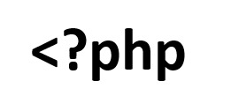
Etiqueta de inicio para escribir codigo PHP
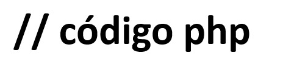
En medio escribimos el codigo PHP
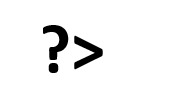
Etiqueta que indica el cierre del codigo PHP
EJEMPLO USANDO ISMAP
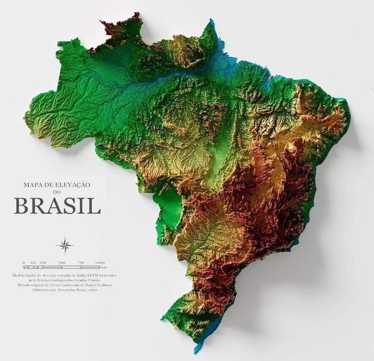
Para una explicación más detallada del atributo ISMAP y los pasos para usarlo, puede profundizar en este documento:

EJEMPLO USANDO USEMAP Y MAP
Con el atributo usemap y la etiqueta map que son las que hoy en dia se usan en web mordernas, no necesitamos utlizar ismap, solo declaramos el atributo usemap con un nombre para el mapa,
abrimos las etiquetas de mapa, colocamos el name del mapa en la etiqueta de inicio de map, que es el mismo usado en usemap, luego iniciamos declarando la forma de la figura (circle, rect, coords, default), las coordenadas,
un href, alt y un target.
En conclusion, ISMAPes un atributo de HTML, antiguo, pero no obsoleto que era usado para indicar que la imagen pertenecia a un mapa de imagen, que solo funcionaba si este pertenecia a una etiqueta ancla con un href valido, donde este href comunmente era un archivo
de un lenguaje que el servidor ejecuta ya que no era el navegador quien decidia el destino si no este lenguaje que podia ser cualquiera, en este caso usamos PHP, para que el mediante una declaracion recuperara las coordenadas enviadas por el navegador, ejecute las condiciones
dentro de los rangos dados por nosotros para decidir a donde enviar al usuario por medio de las coordenadas clicladas, aplicamos logica de excepciones por la solapacion de regiones y entendiendo que PHP trabaja con rectangulos, no entiende de figuras como poligonos a menos que
usemos point-in-poly que sera mas adelante, entonces por eso puede que al clicar un punto sea uno que esta dntro de ese rectangulo invisible en el que la region esta aunque no esta exacto dentro del mapa y contrastamos con usemap y map para notar la diferencia, facilidad y funcionalidad
de este atributo y etiqueta que hace que ismap sea menos usado.
LONGDESC
El atributo longdesc (long description) es el complemento del atributo alt, longdesc es una descripcion mas detallada de la imagen, no es algo que se muestra, no muestra un enlace visible y los navegadores modernos lo ignoran.
Este atributo es principlamente para lectores de pantalla, para personas con discapacidad visual que no pueden ver la imagen y necesita saber su contenido exacto y para contextos educativos o tecnicos. Longdesc es un archivo HTML normal, con etiquetas y atributos como si fuera otra pagina web
solo que sin ser visible al usuario, aunque oficialmente no esta obsoleto, ya dejo de ser una practica profesional y ha sido reemplazado por alternativas modernas.
Actualmente su soporte es inconsistente y no se recomienda para nuevos desarrollos.
Ejemplo del uso de longdesc:
No se muestra ningun link ni enlace visible para el usuario ni navegador, ambos lo ignoran, al usar un lector de pantalla, este si lo detecta y lo lee.
Con un enlace visible:
Es la forma más simple y aceptada, que se usa si el contenido de la descripción de la imagen tiene relevancia o pertenece a un contexto educativo que es también util para usuarios visuales tanto como para no visuales.
figure + figcaption:
Esta alternativa no solo reemplaza a longdesc por mucho si no que también la supera, es la semántica más correcta para practicas profesionales, donde al igual que mediante un enlace visible se usa si la descripción de la imagen es relevante para todos los tipos de usuarios.
Usando ARIA:
Aria es un recurso de HTML que únicamente se usa cuando HTML no puede hacer todo por si solo y necesita ayuda, aria tiene varias funciones, entre ella describir imagenes, sustituyendo asi el uso del atributo longdesc, esta forma es más usada cuando el contenido descriptivo de la imagen no es relevante para usuarios visuales,
su uso no genera alteraciones en el contenido, únicamente es detectada por lectores de pantalla.
Descripción detallada del mapa de Brasil
La imagen muestra el mapa de relieves de Brasil, cubierto por sus zonas boscosas, montañosas y llenas de vegetación.
Con el lema "MAPA DE ELEVACAO DO BRASIL".
Esta dividido en coordenadas en sus cincos regiones: Norte, Centro-Oeste, Nordeste, Sudeste y Sur.
El mapa de Brasil forma un triángulo del lado sur del Continente Sudaméricano.
Región Norte:
Ubicada en la parte superior izquierda del mapa, es la región más grande de Brasil en cuanto a área, ocupando un 45% de todo el territorio Brasileño,
cuenta con grandes depresiones naturales, incluye la Amazonía y el famoso río Amazonas, que no es un en si un río si no una red de agua donde cientos de caminos
de agua desembocan en él.
Región Centro-Oeste:
Esta región esta ubicada en la parte baja del mapa, justamente bajo la región norte, esta región alberga a la capital de Brasil, Brasilia la cual es actualmente la tercera
ciudad más grande del país.
Región Nordeste:
Esta región se ubica en la parte superior derecha del mapa, por su ubicación en el mapa, posee un clima semiárido haciendo que sea la región pase hasta casi 6 meses sin lluvias
lo que provoca que los rios se sequen, aún así posee una vegetación muy variada.
Región Sudeste:
Es la región más poblada del país, ya que alberga la megalópolis más grande del país, donde están ubicados los estados de Río de Janeiro y São Paulo.
Está ubicada al lado derecho de la región Centro-Oeste y bajo la región Nordeste, no parece una región grande a simple vista en el mapa pero es la región más poblada del país,
albergando al 42% de la población total del país.
Region Sur:
Es la región ubicada en la "colita" del país y por esta ubicación es la única región del país donde nieva, haciendo que en el invierno reciba a miles de visitantes turistas por sus
festivales y además alberga el parque de diversiones más grande de América Latina.
NAME
El atributo name en la etiqueta de image se utilizaba para nombrar al elemento principalmente para poder ser referenciado por una etiqueta ancla en versiones antiguas de HTML. En la actualidad, este uso se considera obsoleto y ha siendo
reemplazado por el atributo id, que permite una identificación más clara, accesible y compatible con CSS y JavaScript.
EJEMPLO CON ID:
REFERRERPOLICY
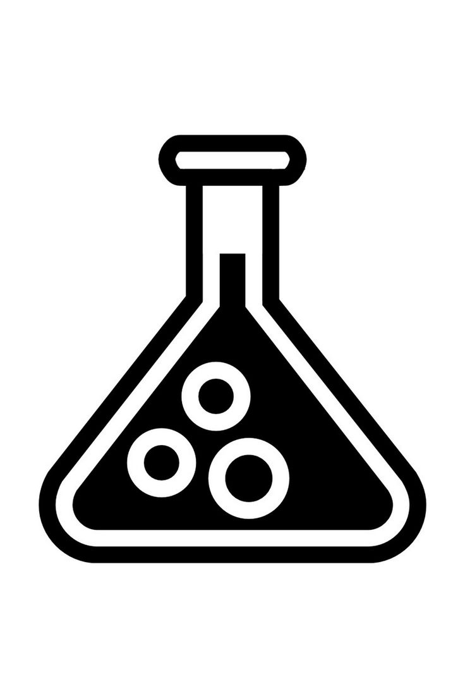
Política de referencia o referrerpolicy es una cadena que indica que información mostrar al servidor externo donde se encuentra alojada la imagen que está siendo solicitada,
el navegador envia un mensaje llamado referer el cual al ser abierto por el servidor puede encontrar información del origen desde esta siendo solicitando dicha imagen. Un origen se compone de 3 elementos: protoloco o esquema, dominio o anfitrión (host) y puerto
y la URL completa esta formada por esos 3 elementos y la ruta (route) o camino (path).
Un downgrade ocurre cuando un recurso es solicitado desde un esquema HTTPS a un HTTP, ya que es un esquema HTTP no cifra su información y un intercambio entre protocolos HTTPS -> HTTP es como gritar la información a todo el mundo.
Un localhost es tratado por los navegadores como un entorno de desarrollo confiable. Al solicitar un recurso HTTPS desde un local host, no se considera downgrade, por lo que el servidor puede recibir el origen según la politica aplicada.
Referer
Al ser abierto por el servidor recibe algo como:
https + midominio.com + 443
Los valores del atributo referrerpolicy son:
-
"no-referrer": En este caso el servidor recibe un referer que se encuentra vacío, no se le envía ningún tipo de información.
Ejemplo:
<img src="https://www.google.com/babobab.jpeg"
referrerpolicy="no-referrer"
alt="Árbol de Baobab">
El servidor no recibe ninguna información.
-
"no-referrer-when-downgrade": Fue el comportamiento por defecto por muchos años.
Se envía el origen (protocolo, dominio y, puerto) siempre y cuando no haya downgrade, si es de https a http no se envía nada.
Ejemplo:
<img src="http://google.com/baobab.jpeg"
referrerpolicy="no-referrer-when-downgrade"
alt="Árbol de Baobab">
Como el origen desde donde se esta solicitando es un https pero donde se encuentra la imagen tiene un esquema http, el servidor no recibe ninguna información.
-
"origin": Se envía el origen pero no la ruta.
Ejemplo:
<img src="https://google.com/baobab.jpeg"
referrerpolicy="origin"
alt="Árbol de Baobab">
El servidor recibe un referer que contiene el origen pero nunca la ruta.
-
"origin-when-cross-origin":Si es el mismo origen se envia la URL completa (protocolo+dominio+puerto+ruta), si es un origen distinto solo envía el origen.
Ejemplo:
<img src="https://google.com/baobab.jpeg"
referrerpolicy="origin-when-cross-origin"
alt="Árbol de Baobab">
Como la imagen esta siendo solicitada desde un localhost hacia un https, el servidor envia un referer que contiene unicamente el origen pero no la ruta.
-
"strict-origin": Envía solo el origen siempre y cuando no haya downgrade. Pero la ruta nunca es enviada asi pertenezcan al mismo origen.
Ejemplo:
<img src="https://google.com/baobab.jpeg"
referrerpolicy="strict-origin"
alt="Árbol de Baobab">
No hay downgrade por lo tanto
google.com puede recibir el origen sin problemas.
-
"strict-origin-when-cross-origin":Si la solicitud va al mismo origen se envia la URL completa, si es hacia otro origen solo se envia el origen.
Ejemplo:
<img src="google.com/babobab.jpeg"
referrerpolicy="strict-origin-when-cross-origin"
alt="Árbol de Baobab">
Aquí solo se envía el origen.
-
"unsafe-url": Esta es una práctica muy riesgosa e insegura ya que el referer envía la URL completa al servidor habiendo o no downgrade lo cual puede generar una fuga de los origenes del recurso protegido por TLS hacia origenes inseguros.
Ejemplo:
<img src="https://google.com/baobab.jpeg"
referrerpolicy="unsafe-url"
alt="Árbol de Baobab">
La practica más insegura, aunque no hay downgrade en este caso, siempre es enviada la URL completa del navegador hacia el servidor.
Incluso aunque el recurso este protegido por HTTPS, la URL completa puede filtrarse a servidores inseguros.
 NOTA: Actualmente, el valor por defecto en la mayoría de navegadores modernos es
NOTA: Actualmente, el valor por defecto en la mayoría de navegadores modernos es strict-origin-when-cross-origin
En conclusión, referrerpolicy es un atributo que ayuda a mantener la seguridad cuando un recurso externo es solicitado, evita la filtración de información sensible sobre el origen desde donde se solicitan los recursos.
SIZES
El atributo sizes es una lista de una o más cadenas separadas por coma, que le indica al navegador cuánto espacio ocupará la imagen en el diseño, dependiendo el ancho del viewport. Cada tamaño de la fuente consiste en:
- Condición de medios. Se omite en el ultimo item (es decir, no se agrega una condición para el último medio).
- Valor del tamaño. Especifica el tamaño y el ancho CSS que ocupará la imagen en el layout (px, vw, em, etc.)
Este atributo se utiliza juntamente con el siguiente atributo llamado srcset.
El atributo sizes solo tiene efecto cuando el atributo srcset utiliza descriptores de ancho (w). Sin srcset, sizes es ignorado por el navegador. Cuando se usa descriptores de densidad (x), sizes no participa en la selección.
Este atributo funciona con dos tipos de condiciones: max-width y min-width.
- max-width (Mobile First): Significa del más pequeño hacia el más grande, dándole prioridad a los dispositivos móviles.
Es el más usado, porque coincide con diseño responsivo moderno, es más fácil de razonar y se alinea con CSS mobile-first.
- min-width (Desktop First): Escritorio primero. Del más grande al más pequeño, es menos común porque al priorizar primero el escritorio requiere más cuidado para evitar errores de diseño en pantallas pequeñas.
Sintaxis básica:
sizes="
(max-width: 600px) 100vw,
(max-width: 900px) 50vw,
33vw"
Se lee:
- En viewports menores o iguales a 600px la imagen ocupara el 100% del ancho visible.
- Si el viewport mide hasta 900px, la imagen ocupará el 50% del ancho visible.
- En pantallas más grandes que no se adaptan a las dos condiciones anteriores ocupará el 33% del ancho visible (una tercera parte)
vw significa viewport width (ancho de la pantalla visible).
SRCSET
El atributo srcset es una lista de una o más cadenas separadas por coma indicando las posibles fuentes para usar. Cada cadena esta compuesta por:
- URL de la imagen.
- Opcionalmente, espacios en blanco seguidos de:
- Un ancho, que es un entero positivo seguido directamente por "w".
- Densidad del pixel, un positivo decimal seguido directamente de "x".
Si no especificamos descriptores, la fuente es asignada por defecto a densidad de 1x.
No se deben mezclar descriptores de ancho con descriptores de densidad, porque son dos modelos totalmente distintos que no se complementan.
Cuando srcset utiliza descriptores de ancho (w), el atributo src actúa como fallback para navegadores que no soportan srcset.
Y cuando utiliza un descriptor de densidad, src actúa como un recurso 1x real.
Los espacios entre los caracteres de la cadena son opcionales ya que son omitidos por el navegador tanto los del inicio como del final, pero considerando el ejemplo de que en la primera cadena de caracteres no haya espacios ni descriptores y si se tiene una segunda cadena, esta segunda cadena debe iniciar uno
o más espacios después de la coma si no la coma se toma como parte de la cadena.
Los agentes del usuario aplican algoritmos internos que consideran DPR (Device Pixel Ratio), ancho de renderizado, preferencias del usuario y condiciones de red al momento de elegir la imagen.
Esto quiere decir que no se basan solo en la obtención de la resolución si no también en:
- Preferencias del usuario:
- Ahorro de datos activo o no.
- Modo de bajo consumo.
- Uso de accesibilidad o zoom.
- Condiciones de red:
El navegador puede evaluar:
- Red lenta (2G/3G), red media (4G) o red rápida (5G).
- Alta latencia.
- Conexión inestable.
- Ahorro de ancho de banda:
El navegador prefiere una imagen "suficientemente buena" antes que una perfecta pero pesada.
- Heurísticas internas (decisión inteligente):
O sea no siempre eligen la imagen "ideal", eligen la mejor decisión contextual para el dispositivo.
Sintáxis básica:
<img
src="easterbunny.png"
alt="Conejo de pascua"
srcset="
easterbunny-400.png 400w,
easterbunny-800.png 800w,
easterbunny-1200.png 1200w
">
- Debe existir cada imagen fisicamente con ese tamaño de ancho.
- Los valores 400w, 800w y 1200w indican el ancho real de la imagen, no el tamaño con el que se mostrará.
- El navegador no descarga todas las imágenes, solo la que considere más adecuada.
¿Cómo se complementan sizes y srcset?
Estos atributos juntos permiten al navegador elegir automáticamente la imagen más adecuada según el tamaño del dispositivo, la resolución de pantalla y el espacio real que ocupará la imagen en el diseño.
Su objetivo principal es mejorar el rendimiento, ahorrar ancho de banda y mantener una buena calidad visual en distintos dispositivos (móviles, tabletas, computadoras, pantallas de alta densidad, etc.)
Sintáxis que el navegador sigue al trabajar con estos atributos en conjunto:
- El navegador evalúa las condiciones declaradas en sizes.
- Calcula el espacio real que la imagen ocupará en pantalla.
- Considera la densidad de píxeles del dispositivo (DPR).
- Elige del srcset la imagen que mejor se adapte a ese espacio.
- Descarga solo esa imagen.
Todo este proceso es realizado automáticamente por el navegador en milisegundos.
NOTA: los descriptores no controlan el tamaño CSS con el que la imagen se muestra, sino la resolución de la imagen.
Ejemplo usando sizes y srcset:
<img
src="easterbunny.png"
alt="Conejo de pascua"
srcset="
easterbunny-400.png 400w,
easterbunny-800.png 800w,
easterbunny-1200.png 1200w"
sizes="
(max-width: 600px) 100vw,
(max-width: 900px) 50vw,
33vw"
Se lee como:
- Móvil: Mide 360px.
- El navegador evalúa las condiciones.
- Primera condición: Si la pantalla mide 600px o menos, la imagen se mostrará en el 100 del viewport. Esta primera condición cumple para el móvil.
- Ahora el navegador considera la densidad de pixeles del dispositivo, por ejemplo si la densidad es de 2x, el navegador multiplica el tamaño de la pantalla (360px) por el DPR (2x).
360 * 2 = 720.
- El navegador se va a srcset y elige la imagen que mejor se adapte.
- 400w → Muy pequeña, se verá borrosa.
- 800w → Perfecta para una densidad de 720px. ✓
- 1200w → Demasiado alta, descarga innecesaria de recursos. ✗
- Descarga la imagen
easterbunny-800.png para mostrarla en pantalla.
- Tableta: Mide 800px.
El navegador sigue la misma sintáxis anterior:
- Evalúa las condiciones.
- Primera condición no se cumple.
- Pasa a la segunda.
- Evalúa.
- Segunda condición: Si la pantalla mide hasta 900px, la imagen usará el 50% del viewport. 800 ≤ 900. Cumple ✓
- La evaluación se detiene ahí.
- La imagen usará el 50vw, o sea 400px en pantalla.
- Considera la densidad de pixeles del dispostivo, por ejemplo 2x, el navegador multiplica 400 * 2 = 800.
- El navegador se va a srcset a elegir la imagen:
- 400w → Muy pequeña, la imagen se verá borrosa.
- 800w → Perfecta ✓. No hay más ni menos.
- 1200w → Demasiado alta. ✗
- El navegador descarga
easterbunny-800.png para mostrarla.
- Escritorio: Mide 1200px.
Misma serie de pasos.
- El navegador se va a sizes a evaluar condiciones.
- Primera condición no cumple.
- Se va a la segunda.
- Segunda condición no cumple.
- Se va a la ultima cadena sin condición.
- Navegador interpreta como: Si 1200 no entra en 600px o menos ni 900px o menos, usaremos el 33% del tamaño del viewport. ✓
- Se queda con esta condición.
- La imagen ocupara la tercera parte del tamaño de la pantalla ≈ 396px.
- Considera la densidad de pixeles del escritorio 1x, realiza la multiplicación: 396 * 1 = 396 ≈ 400.
- Se va a srcset a elegir la mejor opción:
- 400w → Perfecta. ✓
- 800w → Podría se considerada por el navegador pero innecesaria.
- 1200w → Demasiado, totalmente inútil. ✗
- El navegador descargará la imagen
easterbunny-400.png para mostrar en la pantalla del escritorio.
De esta forma es como sizes y srcset trabajan de la mano, no pueden ir la una sin la otra.
Aclarando que todos esos pasos no son trabajo de nosotros como programadores, es parte del trabajo que realiza en milisegundos el navegador. Se muestran como un extra para comprender a fondo de una mejor manera al servidor.
El uso de srcset o de sizes no omiten el uso de CSS para aplicar alto o ancho a la imagen, la imagen siempre los necesita!
Ejemplo usando SIZES y SRCSET:

Arañas:
Las arañas son un conjunto de animales artrópodos muy abundante en todo el mundo y del que se conocen aproximadamente unas
45.000 especies diferentes. Son el orden más numeroso de la clase Arachnida y están lejanamente emparentadas con otros grupos
de artrópodos, como los insectos. Se trata además de uno de los grupos más diversos, colocándose en cuanto al resto de organismos
en el séptimo lugar respecto a su diversidad.
Las arañas tienen el cuerpo dividido en dos partes denominadas tagmas, y cuentan con cuatro pares de patas. Se sabe que durante
la prehistoria existieron algunas arañas que podían llegar a medir 50 centímetros, pero actualmente la más grande que existe tiene
un tamaño de 30 centímetros. Por regla general son animales solitarios y depredadores de pequeños insectos a los cuales pueden dar
caza a través de técnicas muy variadas. Algunas, de hecho, poseen potentes venenos los cuales un pequeña cantidad, puede acabar con
la vida de un ser humano.
Son capaces de producir seda que usan para tejer sofisticadas telarañas principalmente con el objetivo de cazar, aunque tienen múltiples
utilidades. A pesar de que algunas de ellas tienen cuatro pares de ojos, la mayoría no gozan de un gran sentido de la vista. Viven
aproximadamente durante un año y se encuentran en prácticamente todas las partes del mundo exceptuando la Antártida.